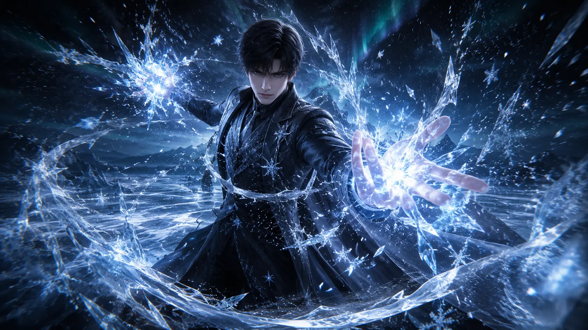
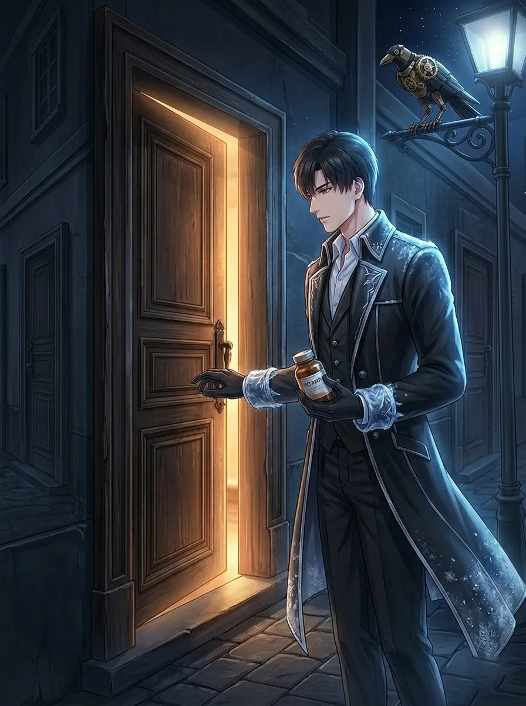
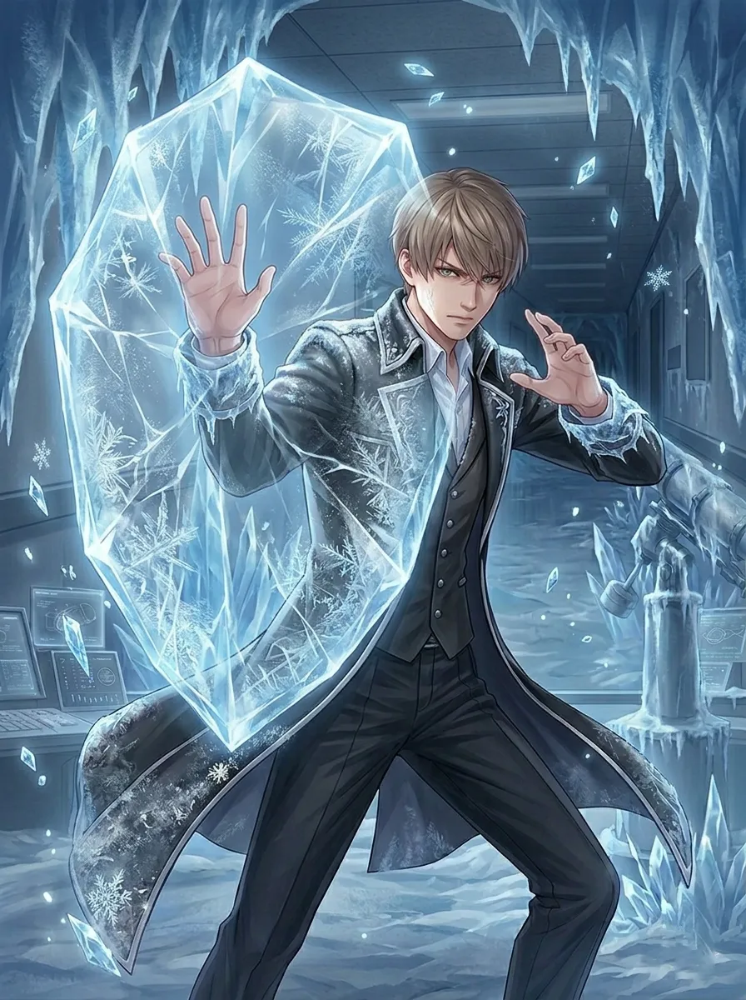
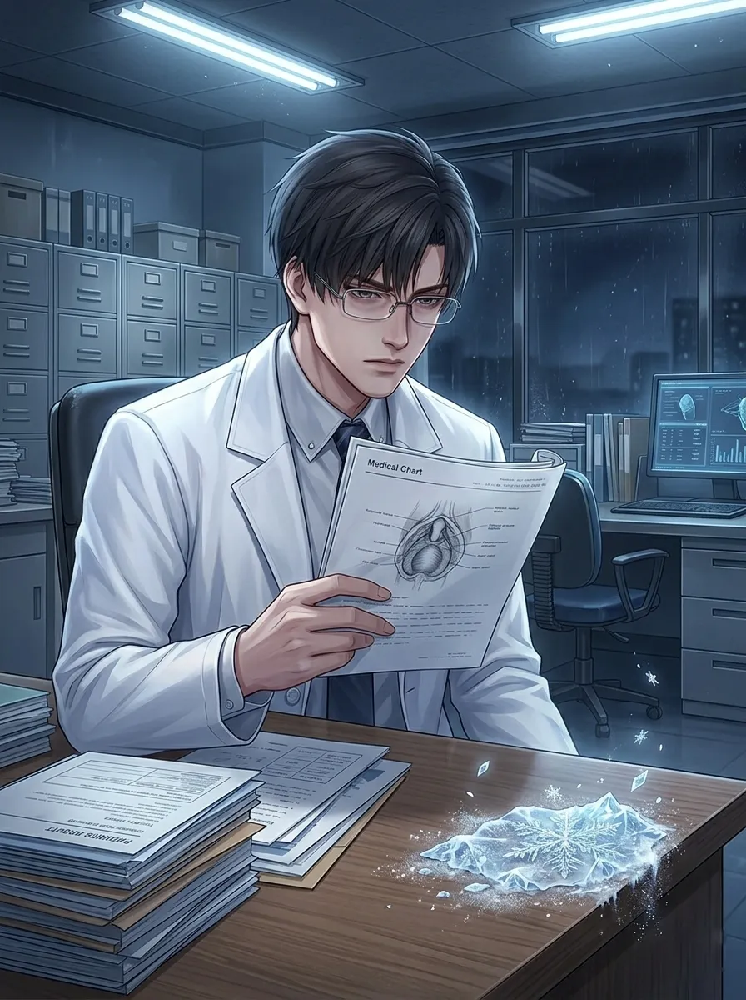
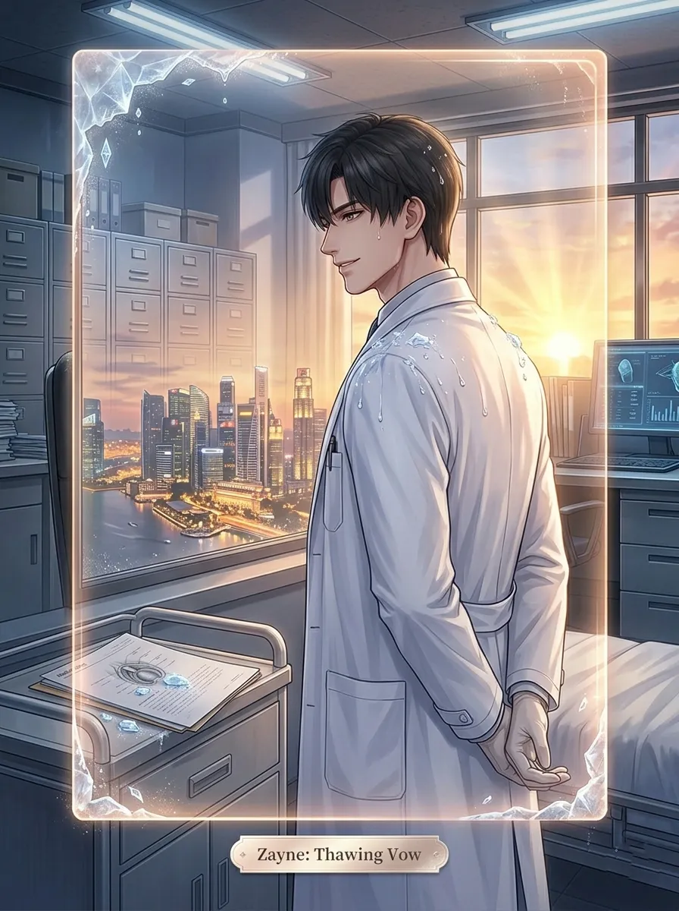
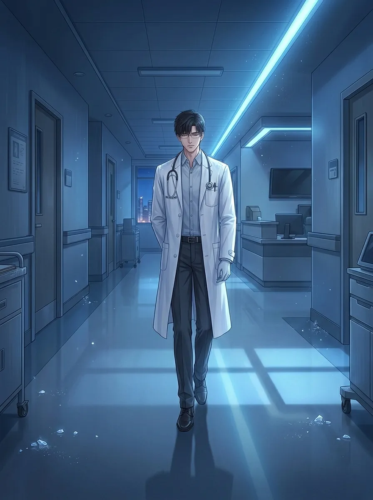
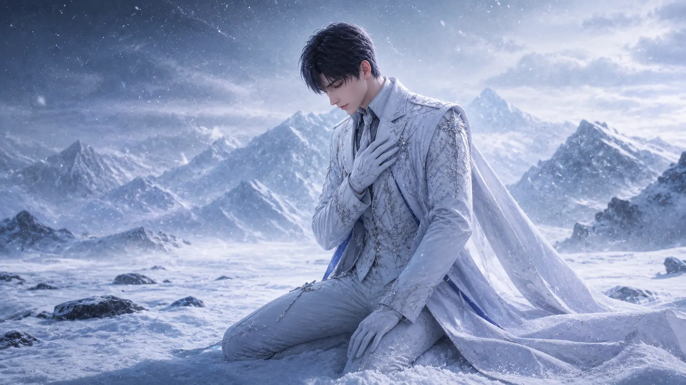
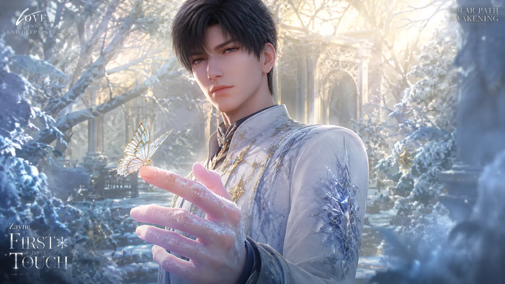

01. MEDICAL & LORE ARCHIVE
Having witnessed the tragedy caused by Protocore Syndrome since childhood, Zayne has dedicated his life to researching a cure. His stoic demeanor is a deliberate barrier to protect those around him from the "eternal winter" he carries. He shares a complex past with the Hunter, often acting as her primary physician and silent guardian. To Zayne, medicine is the act of stealing time from death, while his ice is the act of freezing time itself.
02. TACTICAL SKILL BREAKDOWN
Basic Attack: Frost Edge
Summons ice blades to deal 5 stages of Ice DMG. Each hit has a 10% chance to inflict 'Chilled', reducing enemy ATK Speed by 15%.
Resonance: Glacial Seal
Zayne and Hunter sync rhythms to create a localized blizzard. Enemies are 'Frozen' for 4s, during which all DMG taken is converted to Critical DMG.
Ardent Oath: Eternal Snow
The ultimate preservation. Zayne unleashes a massive ice pillar that explodes into lethal shards, dealing 1400% DMG and fully restoring Hunter's Stamina.
03. ASCENSION & RANK BONUSES
04. OPTIMIZED PROTOCORE BUILDS
| Build Type | Slot Alpha (Δ) | Slot Beta (Β) | Sub-stats Priority |
|---|---|---|---|
| Perma-Frost | Ice DMG% | Crit DMG% | Crit Rate > ATK% > Ice DMG |
| Sanctuary | HP Bonus% | Incoming Heal% | HP > DEF > Recovery Speed |
05. COMBAT STRATEGY & ROTATION
Zayne is the most versatile character in the roster, functioning equally well as a main DPS, support, or hybrid depending on protocore setup. His core mechanic revolves around the Freeze status—enemies afflicted by Frostbite take 25% increased damage from all sources, making him an exceptional enabler for burst-oriented teammates. The optimal approach is to maintain permanent Freeze uptime on priority targets while weaving in Ice DMG bursts during Resonance windows.
What sets Zayne apart is his sustain capability. Global Resonance provides a 25% team-wide heal over its duration, making him invaluable in protracted Abyssal floor fights where healing opportunities are limited. His R2 Medical Ethics talent further enhances this by boosting healing by 40% when the Hunter is below half HP. In solo content, the Sanctuary protocore build (HP/Incoming Heal) transforms Zayne into an unkillable tank that can outlast almost any encounter.
- Open with Global Resonance to apply Freeze and heal.
- Switch to main DPS for burst damage during Freeze window.
- Swap back to Zayne when support needs healing.
- Re-apply Freeze with Frostbite Dash → Basic Attack.
- Use Eternal Snow as a panic button (heals + huge AoE damage).
06. INTERCEPTED VOICE FILES
06. SIGNATURE MEMORIES

[FROSTBITE]Solar Path - Core DPS

[COLD REMEDY]Lunar Path - Support

[ICE BARRIER]Lunar Path - Defense

[CLINICAL SILENCE]Solar Path - Control

[THAWING HEART]Lunar Path - Recovery

[MIDNIGHT ROUNDS]Solar Path - Hybrid
Lunar Path - Quietus

[WHITE OATH]Lunar Path - Vow

[FIRST TOUCH]Solar Path - Awakening
Solar Path - Exhale